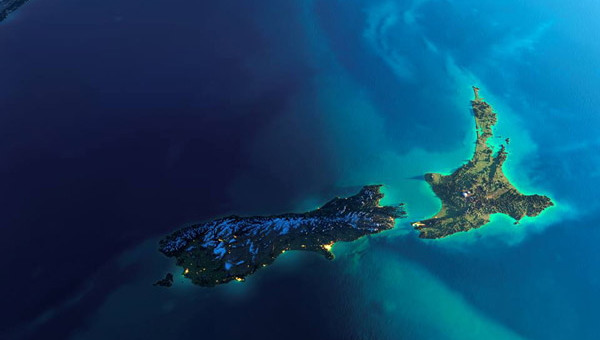

New Zealand is an island nation in the southwestern Pacific Ocean.
It contains two main islands (North and South) and numerous smaller islands.
Because of its remoteness, it was one of the last lands to be settled by humans.
